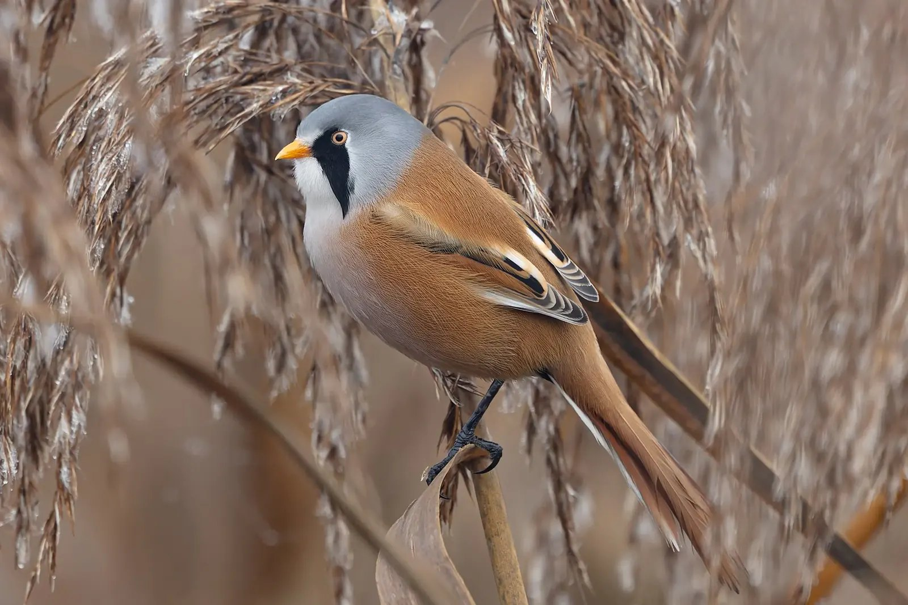

Fältbok, sida 1
Känn igen fågeln. Bevara stunden.
Rikta kameran, välj ett foto eller låt fågeln sjunga. Birdy föreslår arten direkt i telefonen, och du sparar fyndet i din egen fältdagbok.

SkäggmesNº 1Panurus biarmicus · Foto: Hobbyfotowiki, CC0
säger hur säker den är
spara i fältboken

SkäggmesNº 1
Panurus biarmicus · Foto: Hobbyfotowiki, CC0
säger hur säker den är
spara i fältboken